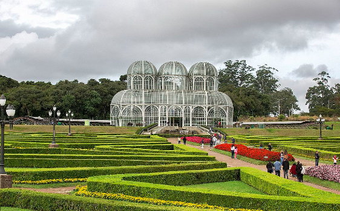
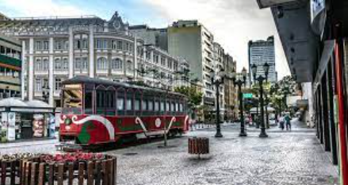
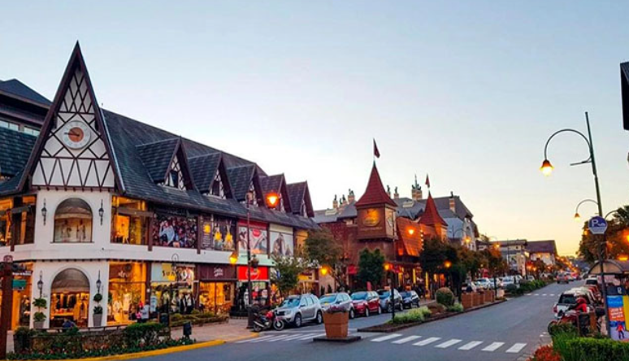
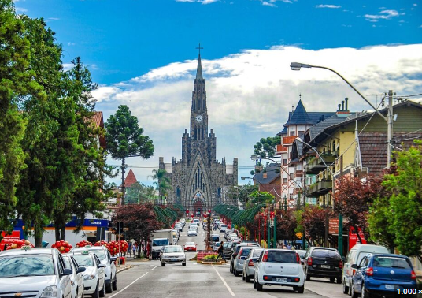
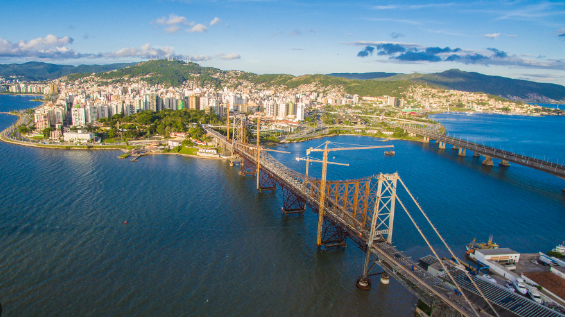
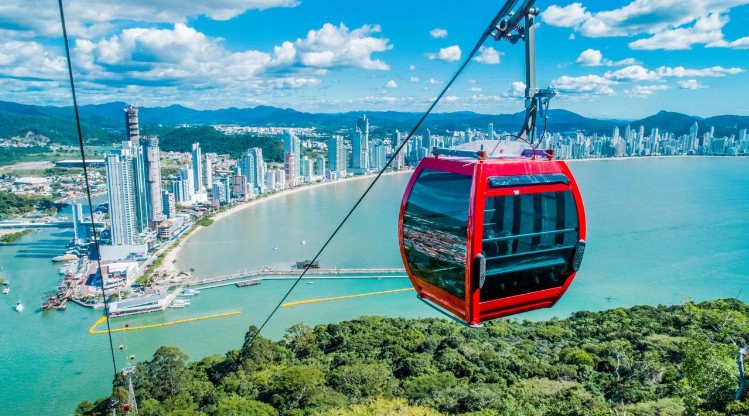

Há muitos lugares para conhecer no sul do brasil no inverno, que estão bem equipados para tirar o melhor proveito do clima!
Com temperaturas médias de 20ºC ao longo do ano e até mesmo a eventual presença de neve, muitos buscam o Sul pelo frio e as atrações que ele traz consigo.
Porém, não pense que é sempre frio. No verão as temperaturas ainda podem ultrapassar 30ºC. Ótima notícia pra quem pensa em aproveitar uma praia sulista!
.Porém, não pense que é sempre frio. No verão as temperaturas ainda podem ultrapassar 30ºC. Ótima notícia pra quem pensa em aproveitar uma praia sulista!

Este é um dos destinos bons de se visitar no verão! Não, não é uma praia, mas as potentes correntezas e quedas d’água das Cataratas do Iguaçu mostram seu maior esplendor na época chuvosa.
Difícil de descrever em poucas palavras, Curitiba está entre as melhores cidades do sul do Brasil para turistas.
Há opções de lindos parques, bairros e ruas pra se passear, fascinantes obras arquitetônicas, ricos museus, teatros e praças.
Sem deixar pra trás o famoso Jardim Botânico, com seus belos jardins externos bem planejados e a estufa de vidro, inspirada no Palácio de Cristal, em Londres.
 Gramado cresceu através do turismo e junto com sua vizinha Canela oferece paisagens belíssimas dentro e fora do centro urbano. Seja na época em que florescem as hortênsias, no inverno ou no período do Natal, quando Gramado fica toda iluminada, viajar para o destino é sempre uma boa ideia! Hoje gramado tem tanto a oferecer que se você pretende passar alguns dias de férias terá que escolher quais atrações visitar, porque a quantidade de atrativos são muitos!
Ao lado de Gramado — cidade distante 6 km de Canela —, o município é um dos principais destinos turísticos brasileiros, contando com rede hoteleira abrangente, desde pequenas hospedarias até hotéis confortáveis. A cidade começou a despontar para o turismo com a abertura de um cassino, no Palace Hotel, em 1944, atraindo visitantes do centro do país e de países vizinhos. No ano seguinte, com a proibição do jogo no Brasil, o turismo sofreu um duro golpe, reduzindo por anos a atividade turística no município
O que fazer em Florianópolis é uma pergunta que pode ter muitas respostas, a depender do gosto de cada um. Mas é certo dizer que Floripa, como carinhosamente é chamada, tem encantos variados que atraem turistas do mundo inteiro: praias para todos os gostos, culinária variada onde os frutos-do-mar são o carro chefe e muita história pra ser vista e ouvida. Por serem tantas as atrações, pode pintar a dúvida de quem vem pela primeira vez: o que fazer em Floripa? Como manezinho da ilha, tendo vivido toda minha vida nesta ilha mágica, reuni neste post algumas dicas para ajudar a fazer essa viagem uma experiência incrível!
A cidade fica no centro das principais rotas turísticas, e podemos dizer com propriedade que você nem precisa sair daqui para encontrar o que precisa!
E claro, não podemos deixar de mencionar o Beto Carrero, que apesar de não fazer parte de Balneário Camboriú, fica muito próximo, sendo esta uma das razões para turistas que vêm visitar o parque, se hospedarem em Balneário Camboriú.
